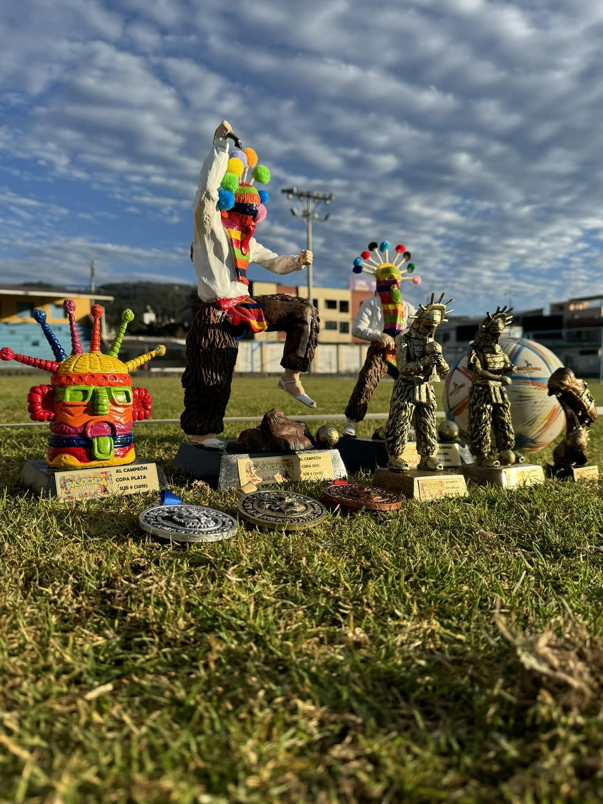

Torneos en Arena Castell
Sigue la Copa Castell que está en juego, conoce la próxima Pasochoa Cup y revive su edición anterior.
AHORA EN LA CANCHA · FÚTBOL 7
En juego · Inscripciones cerradasCopa Castell · Mundial de Campeones
Consulta los marcadores de cada fecha, la clasificación y los goleadores del torneo que se está jugando.

COPA CASTELL · EN JUEGO
Sigue el torneo
Elige lo que quieres consultar. Cada marcador publicado actualiza las posiciones y los goleadores.
Resultados del torneo
CLASIFICACIÓN DEL TORNEO
Tabla de posiciones · Fecha 6
Clasificación actualizada con los partidos finalizados del 2 y 3 de octubre de 2026. Alemania–Venezuela no suma puntos ni goles hasta que se juegue.
Pts: puntos · PJ: partidos jugados · PG: ganados · PE: empatados · PP: perdidos · GF: goles a favor · GC: goles en contra · DG: diferencia de goles.
Top 20 de goleadores
Los 20 máximos goleadores del torneo, con los goles acumulados hasta los partidos finalizados del sábado 3 de octubre de 2026.
| Posición | Jugador | Selección / equipo | Dorsal | Goles |
|---|
COPA CASTELL · EDICIÓN MUNDIALISTA
Próxima fecha · Fecha 7
Todos los partidos se juegan el viernes 9 de octubre de 2026. Horarios de Ecuador. El sábado 10 de octubre no habrá partidos.
Alemania juega dos partidos: contra Portugal a las 4:30 p. m. y contra Venezuela a las 5:30 p. m. Este último es el partido reprogramado de la fecha 6.
LOS DESTACADOS DE LA JORNADA
Jugador del partido · Fecha 6
Reconocemos a los jugadores destacados de esta fecha. Toca una foto para verla completa.
Equipos y jugadores
Abre una selección para ver su plantilla. Los dorsales no confirmados se dejan en blanco.
15 selecciones disponibles
Información general de esta edición
Cada equipo representa a una selección. La Copa comenzó el 28 de agosto de 2026 y sus inscripciones están cerradas.
- Modalidad
- Fútbol 7
- Lista por equipo
- Máximo 15 jugadores
- Inscripción
- $25 por equipo
- Premio al campeón
- $300 + trofeo

ASÍ VIVIMOS LA EDICIÓN ANTERIOR
Pasochoa Cup · Quinta edición
Una edición que reunió a niños, familias y equipos alrededor del fútbol. En la premiación final, 800 niños recibieron su reconocimiento.

Ver más fotos de la quinta edición